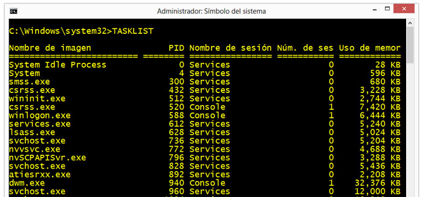

TASKLIST y TASKKILL son dos de los comandos que incluye el ejecutable cmd.exe que resultan muy útiles y nos auxilian cuando nos vemos en problemas en Windows.
Podemos usarlos directamente en la consola de CMD o Símbolo del sistema, en archivos batch o en scripts, para administrar completamente los procesos y tareas ejecutándose en nuestro equipo.
Podemos con ellos obtener información y crear listas detalladas, detener aplicaciones, tareas y procesos aun cuando están bloqueados y no responden.
Usarlos es algo sencillo, aun si no se tiene experiencia en el uso de la línea de comandos.
En el artículo relacionamos varios ejemplos prácticos, para copiar y pegar.
Utilizar el comando TASKLIST en Windows
TASKLIST, (del inglés listar tareas) muestra todas las aplicaciones ejecutándose en el equipo con el número de identidad del proceso (PID).
Es muy sencillo de usar, solo basta introducirlo y a continuación el parámetro necesario.
Si se usa sin ninguna opción muestra una lista similar a la que aparece en la pestaña Procesos del Administrador de tareas.
Se muestra: el nombre del proceso, el PID (número de identidad del proceso) y la memoria usada.

Parámetros para usar con TASKLIST
Los parámetros nos permiten funcionalidades adicionales, los principales son los siguientes:
| TASKLIST /V | Muestra información detallada de cada tarea ejecutándose. |
| TASKLIST /SVC | Muestra información adicional de los servicios hospedados en cada proceso. |
| TASKLIST /M modulo | Muestra todas las tareas que usan un módulo DLL o EXE especificado. Si no se indica el modulo se muestran todos los módulos cargados. |
| TASKLIST /FO formato | Especifica el formato de salida. Puede ser: "TABLE", "LIST", "CSV". |
| TASKLIST /NH | Si se usan los formatos "TABLE" y "CSV", especifica que el "encabezado de columna" no se debe mostrar. |
| TASKLIST /FI filtro |
Filtra la información que se solicita con un criterio especificado. |
Utilizar el comando TASKKILL
TASKKILL es un comando que complementa al anterior.
Permite detener tareas o procesos usando el PID (número de identidad del proceso) o el nombre.
Parámetros para usar con TASKKILL
| TASKKILL /PID identidadproceso | Detiene un proceso especificando el número de identidad. Este puede conocerse usando TASKLIST. |
| TASKKILL /IM nombreTarea | Detiene un proceso especificando su nombre. |
| TASKKILL /FI filtro | Permite usar un filtro para seleccionar varias tareas al mismo tiempo. |
| TASKKILL /T | Termina un proceso y todos los procesos secundarios iniciados por él. |
| TASKKILL /F | Especifica que se debe terminar un proceso de forma forzada. |